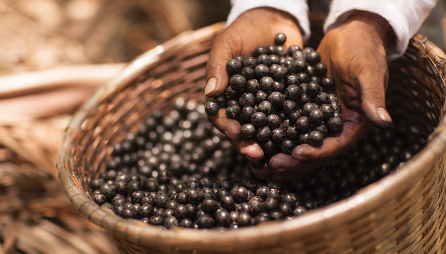
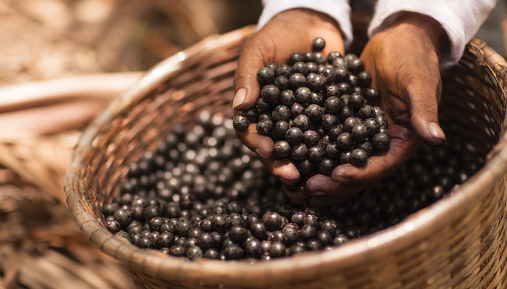
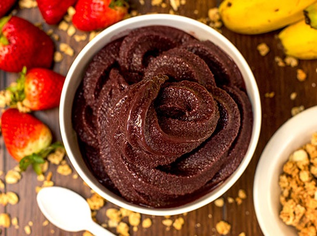
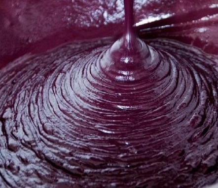
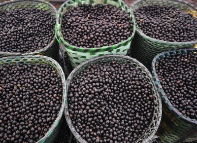

Bons motivos para você consumir o Açaí
Ele possui alto teor de antocianinas, presentes em outros alimentos de cor roxa, como uvas, elas garantem uma melhor circulação sanguínea e protegem o organismo contra o acúmulo de placas de gordura, assim, garantem a saúde das veias e artérias, consequentemente, o sistema cardiovascular é beneficiado. Apenas para se ter uma ideia, um litro de açaí, contém 35 vezes mais antocianina do que um litro de vinho tinto!
As fibras da fruta facilitam o trânsito intestinal, evitando a prisão de ventre, o que garante, entre outros benefícios, uma melhor digestão dos alimentos, ajudando a evitar o acúmulo de gordura.
O açaí é rico em ácido oleico, uma gordura essencial que protege contra o câncer de três maneiras: bloqueando os genes que causam a doença; atrasando o desenvolvimento de tumores e fazendo as células da doença se autodestruírem.
Ainda possui ingredientes que mantem o cérebro alerta por mais tempo e evitam que ocorram danos que podem vir a evoluir para o temido Mal de Alzheimer. Os ácidos graxos essenciais na sua composição, como o Ômega-6 e Ômega-9, além de outras propriedades, fazem do açaí um regulador eficiente dos níveis de colesterol, tanto o LDL (considerado ruim) quanto de HDL (bom colesterol), prevenindo coágulos ou outros danos cardiovasculares.
Os atletas são adeptos do açaí na dieta devido ao alto valor energético da fruta, que dá um pique incrível para as atividades físicas, além das vitaminas e do ferro, que previne anemia e fortalece os músculos.
O fruto possui alto teor de proteínas, que têm como uma de suas funções a formação de aminoácidos, o principal construtor muscular. As proteínas também contribuem para a produção de anticorpos (células de defesa do organismo), fortalecendo, assim, o sistema imunológico e aumentando a capacidade de combater infecções.
O cálcio presente na composição da fruta garante dentes e ossos fortes e previne a osteoporose e outros problemas ósseos.
O potássio do açaí, aliado à boa ingestão de água, evita as terríveis cãibras na prática esportiva.
Os nativos da região amazônica sempre tiveram o açaí como poderoso afrodisíaco, pesquisas confirmam esse poder da fruta, portanto, o prazer sexual também é beneficiado por ele!
|  |  |  |